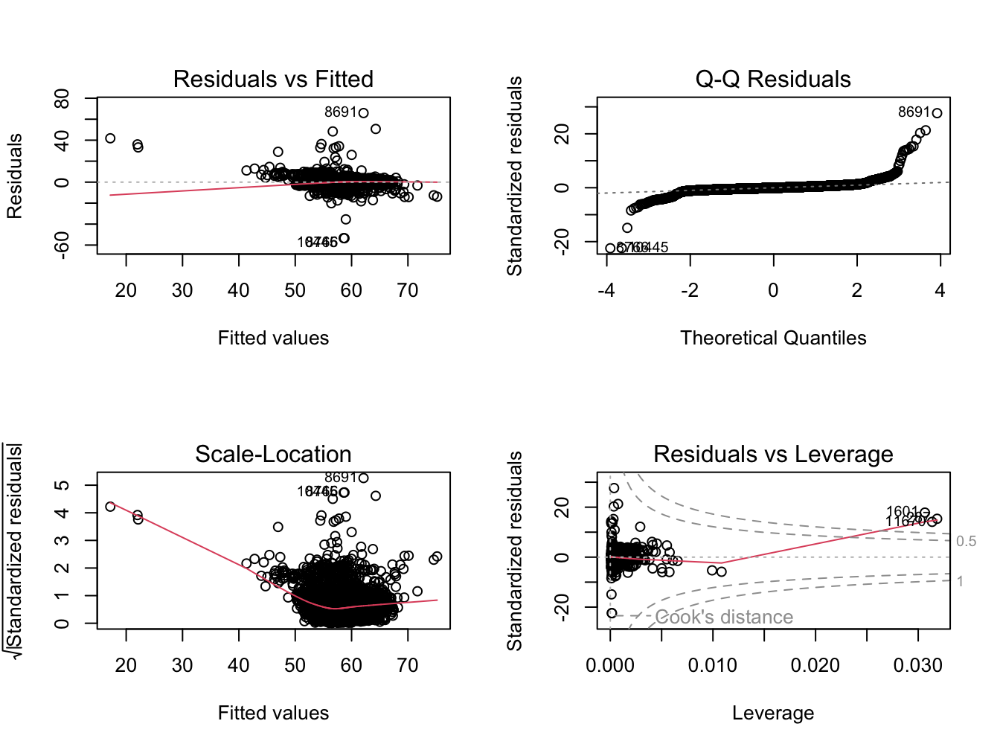

This example assesses whether height, measured at the 1-Year follow-up (T1) in a subsample of ABCD participants, is predicted by weight and height measured at baseline (T0). A visual inspection is further conducted via a scatterplot to graphically represent the relationship between height at Year_1 and weight at baseline, controlling for height at baseline. The ensuing analysis and interpretations are detailed in the subsequent sections.
This code installs the r packages necessary for this example, if they are not already installed
Code
# Create a list of required packagespackages_required <-c("tidyverse","easystats","lme4","gtsummary","report","broom","gridExtra")# Check which packages are not installed and install thempackages_to_install <-setdiff(packages_required, rownames(installed.packages()))if (length(packages_to_install) >0) {install.packages(packages_to_install)}# Load the required packageslapply(packages_required, library, character.only =TRUE)
This code loads the r libraries necessary for this example
Code
library(tidyverse) # Collection of R packages for data sciencelibrary(easystats) # Collection of R packages statistical modeling, visualization, and reportinglibrary(gtsummary) # Publication-ready tableslibrary(report) # Easy reporting of regression analyseslibrary(broom) # Tidy and augment statistical models outputlibrary(gridExtra) # Arrange multiple grid-based plots on a page
This code reads in and shows the data to be used in the current example
Code
# Set the data pathsdata_path_1 <-"/Users/shawes/ABCD/data/rds/abcd_5.0_rds/demo5.0.rds"data_path_2 <-"/Users/shawes/ABCD/data/rds/abcd_5.0_rds/core-rds-5.0/non-imaging_excluding_nt_5.0.rds"# Read the datadata_demographics <-readRDS(data_path_1)data_nonimaging <-readRDS(data_path_2)# Subset the nonimaging data to include desired variablesselected_vars <-c("src_subject_id", "eventname", "nihtbx_totalcomp_fc", "anthroweightcalc", "anthroheightcalc")subset_data <- data_nonimaging[, selected_vars]library(dplyr)# # Merge the datasets on 'src_subject_id' and 'eventname'merged_data <- data_demographics %>%full_join(subset_data, by =c("src_subject_id", "eventname"))# Inspect the merged data structurestr(merged_data)# Define event names to be retained in the analysis and convert variables to appropriate data typeseventnames_to_include <-c("baseline_year_1_arm_1","1_year_follow_up_y_arm_1","2_year_follow_up_y_arm_1","3_year_follow_up_y_arm_1","4_year_follow_up_y_arm_1")df <- merged_data %>%filter(eventname %in% eventnames_to_include) %>%mutate(src_subject_id =as.factor(src_subject_id),eventname =factor(eventname, levels = eventnames_to_include, ordered =TRUE),age =as.numeric(age),sex =as.factor(sex),race.4level =as.factor(race.4level),hisp =as.factor(hisp),high.educ.bl =as.factor(high.educ.bl),household.income.bl =as.factor(household.income.bl),acs_raked_propensity_score =as.numeric(acs_raked_propensity_score),rel_family_id.bl =as.factor(rel_family_id.bl),site_id_l =as.factor(site_id_l),nihtbx_totalcomp_fc =as.numeric(nihtbx_totalcomp_fc),anthroweightcalc =as.numeric(anthroweightcalc),anthroheightcalc =as.numeric(anthroheightcalc) ) %>%# Exclude cases from unused assessment wavesfilter(!is.na(eventname))
The code snippet below tells R to conduct a multiple regression analysis by subtracting each participant’s height at T1 from their height at T0. Relevant summary statistics are also provided.
Compute Multiple Regression Model
Code
# Split data using the correct eventname valuesbaseline_data <- df %>%filter(eventname =="baseline_year_1_arm_1") %>%select(src_subject_id, Height_baseline = anthroheightcalc, Weight_baseline = anthroweightcalc)followup_data <- df %>%filter(eventname =="1_year_follow_up_y_arm_1") %>%select(src_subject_id, Height_followup = anthroheightcalc)# Merge baseline and follow-up datamerged_data <- baseline_data %>%left_join(followup_data, by ="src_subject_id")# Check the first few rows of the merged data#head(merged_data)# Fit the regression model excluding NA valuesmodel <-lm(Height_followup ~ Height_baseline + Weight_baseline, data = merged_data, na.action = na.exclude)
Call:
lm(formula = Height_followup ~ Height_baseline + Weight_baseline,
data = merged_data, na.action = na.exclude)
Residuals:
Min 1Q Median 3Q Max
-53.49 -0.83 -0.09 0.74 65.88
Coefficients:
Estimate Std. Error t value Pr(>|t|)
(Intercept) 17.18159 0.41712 41.2 <2e-16 ***
Height_baseline 0.68665 0.00847 81.0 <2e-16 ***
Weight_baseline 0.03026 0.00120 25.3 <2e-16 ***
---
Signif. codes: 0 '***' 0.001 '**' 0.01 '*' 0.05 '.' 0.1 ' ' 1
Residual standard error: 2.38 on 11130 degrees of freedom
(735 observations deleted due to missingness)
Multiple R-squared: 0.575, Adjusted R-squared: 0.575
F-statistic: 7.54e+03 on 2 and 11130 DF, p-value: <2e-16
Code
par(mfrow =c(2, 2)) # Set up a 2x2 plotting areaplot(model) # Generate diagnostic plots

This regression analysis evaluates how baseline height and weight predict children’s height at a 1-year follow-up. The output from our model provides several key statistics:
an F-statistic of 7539.2168865;
degrees of freedom of 11130;
parameter estimates for baseline height and weight;
standard errors for these estimates; and
p-values for the significance of these estimates.
For every one unit increase in baseline height, there’s an associated increase of approximately 0.687 units in the follow-up height, and this effect was statistically significant with a p-value of 0. Similarly, for every one unit increase in baseline weight, there’s an associated increase of approximately 0.0303 units in the follow-up height, which is also statistically significant with a p-value of 3.9902186^{-137}. Overall, this model explains a substantial portion of the variance in follow-up height, with an adjusted R-squared value of 0.5753. The overall model is highly significant with a p-value less than 0, indicating that the predictors, collectively, have a significant relationship with the dependent variable.
Code
# Scatterplot with regression line for Weight_baselineggplot(merged_data, aes(x = Weight_baseline, y = Height_followup)) +geom_point(alpha =0.5) +geom_smooth(method ="lm", color ="black") +labs(title ="Relationship between Baseline Weight and Follow-up Height",x ="Baseline Weight",y ="Follow-up Height") +theme_minimal()
The scatterplot visually depicts the relationship between children’s weights at baseline (Weight_baseline) and their heights at Year_1 (Height_followup). Each point on the plot represents a child, with their baseline weight plotted on the x-axis and their Year_1 height on the y-axis. The clear positive linear trend, as illustrated by the black regression line, indicates that children who had higher weights at baseline generally had higher heights at Year_1. While further statistical analyses can quantify the strength and direction of this relationship, visually, the data suggests a pronounced positive association between baseline weight and follow-up height.
The regression analysis was conducted to predict children’s height at the 1-Year follow-up using their baseline height (Height_baseline) and weight (Weight_baseline). Both predictors were statistically significant. Specifically, for every one-unit increase in baseline height, the height at Year_1 increased by approximately 0.687 units, while holding weight constant. Similarly, for every one-unit increase in baseline weight, the height at Year_1 increased by about 0.0303 units, while holding baseline height constant. The overall model explained a substantial 57.53% of the variance in height at the 1-Year follow-up, as indicated by the adjusted R-squared value.
Source Code
---title: "Residualized Change Scores"author: "Biostatistics Working Group"---# Mulitple Regression {.unnumbered}## Overview<p>This example assesses whether height, measured at the 1-Year follow-up (T1) in a subsample of ABCD participants, is predicted by weight and height measured at baseline (T0). A visual inspection is further conducted via a scatterplot to graphically represent the relationship between height at Year_1 and weight at baseline, controlling for height at baseline. The ensuing analysis and interpretations are detailed in the subsequent sections.</p>## Preliminary Setup::: panel-tabset### Install Packages {.tabset .tabset-fade .tabset-pills}::: blue> **This code installs the r packages necessary for this example, if> they are not already installed**```{r pckg-install}#| echo: TRUE#| messages: FALSE#| warning: FALSE#| output: FALSE# Create a list of required packagespackages_required <- c("tidyverse","easystats","lme4","gtsummary","report","broom","gridExtra")# Check which packages are not installed and install thempackages_to_install <- setdiff(packages_required, rownames(installed.packages()))if (length(packages_to_install) > 0) { install.packages(packages_to_install)}# Load the required packageslapply(packages_required, library, character.only = TRUE)```:::### Load Packages::: blue**This code loads the r libraries necessary for this example**```{r lib-load}#| echo: TRUE#| messages: FALSE#| warning: FALSE#| output: FALSElibrary(tidyverse) # Collection of R packages for data sciencelibrary(easystats) # Collection of R packages statistical modeling, visualization, and reportinglibrary(gtsummary) # Publication-ready tableslibrary(report) # Easy reporting of regression analyseslibrary(broom) # Tidy and augment statistical models outputlibrary(gridExtra) # Arrange multiple grid-based plots on a page```:::```{r config}#| echo: FALSE#| messages: FALSE#| warning: FALSE#| output: FALSE### Config Options#::: blue#**This code configures knitr code chunk options** knitr::opts_chunk$set(echo = T, message=F, warning=F, error=F, comment=NA, cache=T, code_folding=T, R.options=list(width=220, digits = 3), fig.align='center', out.width='75%', fig.asp=.75)```:::## Descriptives Overview::: panel-tabset### Read and View Data {.tabset .tabset-fade .tabset-pills}::: blue**This code reads in and shows the data to be used in the currentexample**```{r read-data}#| echo: TRUE#| messages: FALSE#| warning: FALSE#| output: FALSE#| cache: FALSE# Set the data pathsdata_path_1 <- "/Users/shawes/ABCD/data/rds/abcd_5.0_rds/demo5.0.rds"data_path_2 <- "/Users/shawes/ABCD/data/rds/abcd_5.0_rds/core-rds-5.0/non-imaging_excluding_nt_5.0.rds"# Read the datadata_demographics <- readRDS(data_path_1)data_nonimaging <- readRDS(data_path_2)# Subset the nonimaging data to include desired variablesselected_vars <- c("src_subject_id", "eventname", "nihtbx_totalcomp_fc", "anthroweightcalc", "anthroheightcalc")subset_data <- data_nonimaging[, selected_vars]library(dplyr)# # Merge the datasets on 'src_subject_id' and 'eventname'merged_data <- data_demographics %>% full_join(subset_data, by = c("src_subject_id", "eventname"))# Inspect the merged data structurestr(merged_data)# Define event names to be retained in the analysis and convert variables to appropriate data typeseventnames_to_include <- c("baseline_year_1_arm_1", "1_year_follow_up_y_arm_1", "2_year_follow_up_y_arm_1", "3_year_follow_up_y_arm_1", "4_year_follow_up_y_arm_1")df <- merged_data %>% filter(eventname %in% eventnames_to_include) %>% mutate( src_subject_id = as.factor(src_subject_id), eventname = factor(eventname, levels = eventnames_to_include, ordered = TRUE), age = as.numeric(age), sex = as.factor(sex), race.4level = as.factor(race.4level), hisp = as.factor(hisp), high.educ.bl = as.factor(high.educ.bl), household.income.bl = as.factor(household.income.bl), acs_raked_propensity_score = as.numeric(acs_raked_propensity_score), rel_family_id.bl = as.factor(rel_family_id.bl), site_id_l = as.factor(site_id_l), nihtbx_totalcomp_fc = as.numeric(nihtbx_totalcomp_fc), anthroweightcalc = as.numeric(anthroweightcalc), anthroheightcalc = as.numeric(anthroheightcalc) ) %>% # Exclude cases from unused assessment waves filter(!is.na(eventname))```:::### Descriptives::: blue**This code creates a descriptives table**```{r descriptives}#| echo: TRUE#| messages: FALSE#| warning: FALSEdescriptives_table <- df %>% select(eventname, sex, race.4level, hisp, anthroweightcalc) %>% mutate(eventname = factor(eventname, labels = c("Baseline", "Year 1","Year 2","Year 3","Year 4"))) %>% mutate(sex = factor(sex, labels = c("Female", "Male"))) %>% tbl_summary( by = eventname, missing = "no", label = list(sex ~ "Sex", race.4level ~ "Race", hisp ~ "Hispanic", anthroweightcalc ~ "Weight"), statistic = list(all_continuous() ~ "{mean} ({sd}) )", all_categorical() ~ "{p}%"), ) %>%modify_header(all_stat_cols() ~ "**{level}**<br>N = {n}") %>% bold_labels() %>% italicize_levels() %>% modify_spanning_header(all_stat_cols() ~ "**Assessment Wave**")theme_gtsummary_compact()descriptives_table```::::::## Results::: panel-tabset### Build Model {.tabset .tabset-fade .tabset-pills}::: blueThe code snippet below tells R to conduct a multiple regression analysis by subtracting each participant's height at T1 from their height at T0. Relevant summary statistics are also provided.**Compute Multiple Regression Model**```{r build-model-resid-regression-1}#| class.source: 'fold-hide'#| message: FALSE#| warning: FALSE#| echo: TRUE# Split data using the correct eventname valuesbaseline_data <- df %>% filter(eventname == "baseline_year_1_arm_1") %>% select(src_subject_id, Height_baseline = anthroheightcalc, Weight_baseline = anthroweightcalc)followup_data <- df %>% filter(eventname == "1_year_follow_up_y_arm_1") %>% select(src_subject_id, Height_followup = anthroheightcalc)# Merge baseline and follow-up datamerged_data <- baseline_data %>% left_join(followup_data, by = "src_subject_id")# Check the first few rows of the merged data#head(merged_data)# Fit the regression model excluding NA valuesmodel <- lm(Height_followup ~ Height_baseline + Weight_baseline, data = merged_data, na.action = na.exclude)```:::### Model Summary {.tabset .tabset-fade .tabset-pills}::: blueA plot to show xxxxx.```{r model-checking}model_summary <- summary(model)print(model_summary)par(mfrow = c(2, 2)) # Set up a 2x2 plotting areaplot(model) # Generate diagnostic plots```This regression analysis evaluates how baseline height and weight predict children's height at a 1-year follow-up. The output from our model provides several key statistics:i. an F-statistic of `r model_summary$fstatistic[1]`;ii. degrees of freedom of `r model_summary$df[2]`;iii. parameter estimates for baseline height and weight;iv. standard errors for these estimates; andv. p-values for the significance of these estimates.For every one unit increase in baseline height, there's an associated increase of approximately `r round(model_summary$coefficients["Height_baseline", "Estimate"], 3)` units in the follow-up height, and this effect was statistically significant with a p-value of `r model_summary$coefficients["Height_baseline", "Pr(>|t|)"]`. Similarly, for every one unit increase in baseline weight, there's an associated increase of approximately `r round(model_summary$coefficients["Weight_baseline", "Estimate"], 4)` units in the follow-up height, which is also statistically significant with a p-value of `r model_summary$coefficients["Weight_baseline", "Pr(>|t|)"]`. Overall, this model explains a substantial portion of the variance in follow-up height, with an adjusted R-squared value of `r round(model_summary$adj.r.squared, 4)`. The overall model is highly significant with a p-value less than `r model_summary$coefficients[1,4]`, indicating that the predictors, collectively, have a significant relationship with the dependent variable.:::### Model Plots {.tabset .tabset-fade .tabset-pills}::: blue```{r scatterplot}# Scatterplot with regression line for Weight_baselineggplot(merged_data, aes(x = Weight_baseline, y = Height_followup)) + geom_point(alpha = 0.5) + geom_smooth(method = "lm", color = "black") + labs(title = "Relationship between Baseline Weight and Follow-up Height", x = "Baseline Weight", y = "Follow-up Height") + theme_minimal()```The scatterplot visually depicts the relationship between children's weights at baseline (`r names(merged_data)[3]`) and their heights at Year_1 (`r names(merged_data)[4]`). Each point on the plot represents a child, with their baseline weight plotted on the x-axis and their Year_1 height on the y-axis. The clear positive linear trend, as illustrated by the black regression line, indicates that children who had higher weights at baseline generally had higher heights at Year_1. While further statistical analyses can quantify the strength and direction of this relationship, visually, the data suggests a pronounced positive association between baseline weight and follow-up height.::::::## Wrapping Up<div class = "blue">::: panel-tabset### Write-up {.tabset .tabset-fade .tabset-pills}::: blueThe regression analysis was conducted to predict children's height at the 1-Year follow-up using their baseline height (`r names(merged_data)[2]`) and weight (`r names(merged_data)[3]`). Both predictors were statistically significant. Specifically, for every one-unit increase in baseline height, the height at Year_1 increased by approximately `r round(model_summary$coefficients["Height_baseline", "Estimate"], 3)` units, while holding weight constant. Similarly, for every one-unit increase in baseline weight, the height at Year_1 increased by about `r round(model_summary$coefficients["Weight_baseline", "Estimate"], 4)` units, while holding baseline height constant. The overall model explained a substantial `r round(model_summary$adj.r.squared * 100, 2)`% of the variance in height at the 1-Year follow-up, as indicated by the adjusted R-squared value.::::::